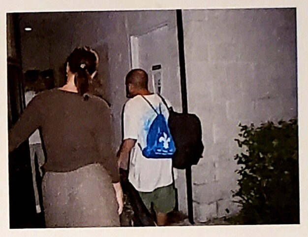
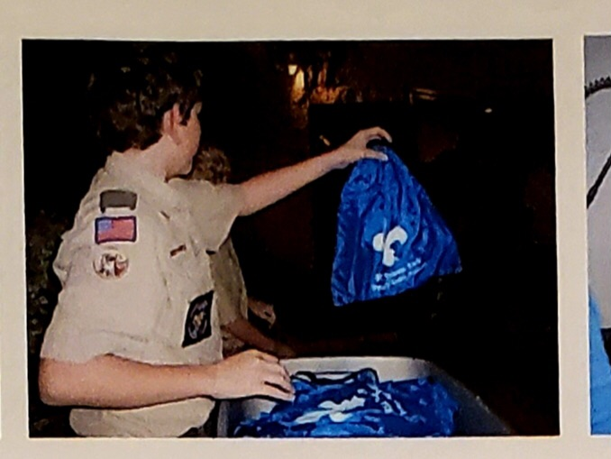
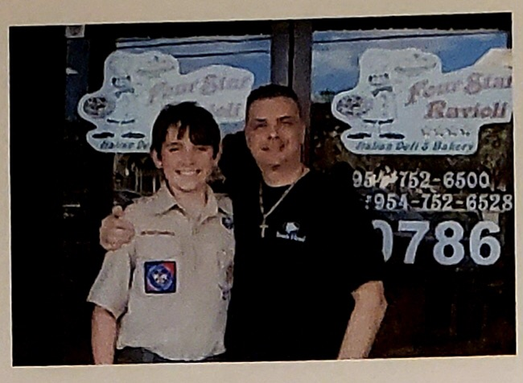
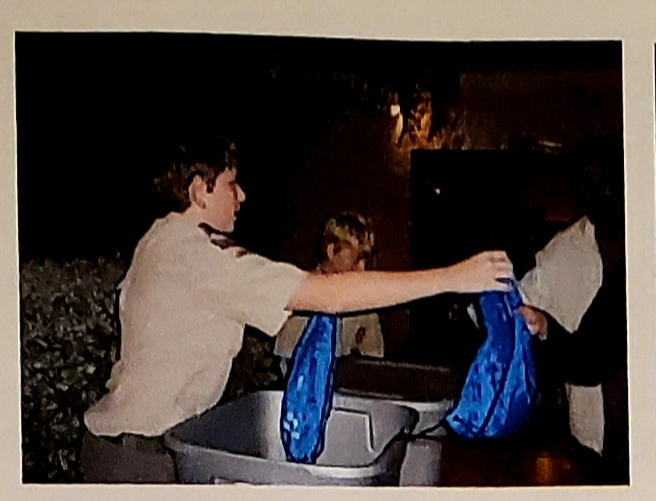
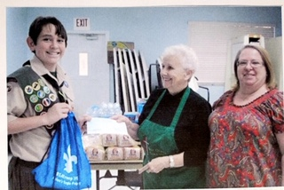
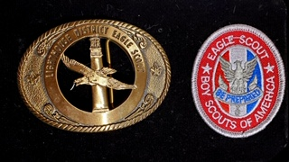
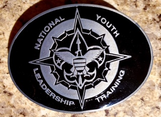
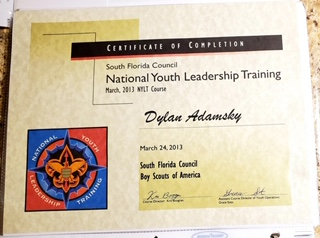
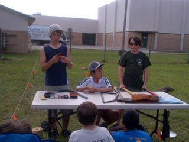

I began Cub Scouts when I was in elementary school. I found a passion for community service and a love for the great outdoors. I made many friends throughout the Cub Scouting years. Many of them followed me into Troop 249, where I started Boy Scouts. Many of the people I became friends with were upward of three years older than me. With the help of their guidance, and the help of the rest of the troop, I quickly climbed to the rank of Life Scout, one rank below Eagle. For my Eagle Project, I wanted to do something more memorable than just making a park bench. I started collecting donations from local businesses who liked my idea. I collected more than five thousand dollars, and was able to make a donation to the church my troop was located at. I put together 200 drawstring backpacks for the homeless during Thanksgiving. In the backpacks, were toiletry items that would help with their personal hygeine, in hopes that they would be able to find jobs. The stereotype of homeless people being distusting really bothers me. When someone is delt a poor hand, it's more beneficial to lend a hand than to kick someone when their down. I was able to organize a Thanksgiving dinner at the Church. All 200 backpacks were given out, and many smiles were on the faces of those who were down on their luck.





After the Project was completed I was able to achieve the highest rank in Boy Scouts. At 14 years old, I became part of the 3 percent of Eagle Scouts in Florida below the age of 15. I was very proud of this achievement, and I continued to strive for higher responsibilty within my Troop. I became the Senior Patrol Leader for my troop right after my two years served as Assistant Senior Patrol Leader. My leadership skills only got better and I wanted them to go even further. I signed up for National Youth Leadership Training as a representative for Troop 249. At 16 years old, I completed the training. The training consisted of Wilderness survival with people you've never met. By setting up traps for rabbits, we were able to feed ourselves for the three nights we were assigned. The group and I built a shelter from limber and twine so the rain would not affect our gear. The training was over after we navigated our way back to the base camp with a map and compass. The 20 mile hike took two nights to complete and I had more fun than ever.



